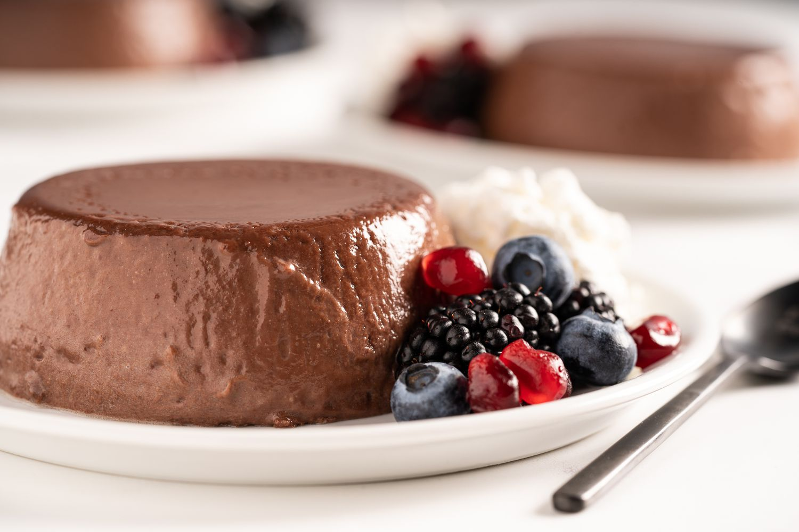

مواد لازم:
- شکلات تختهای (با طعم دلخواه): ۵۰ گرم
- پودر کاکائو: ۲ قاشق چایخوری
- شیر: ۲ لیوان دستهدار فرانسوی
- خامه: ۱/۴ لیوان دستهدار فرانسوی
- پودر ژلاتین: ۱ قاشق غذاخوری
- شکر: ۱۰ قاشق غذاخوری
- وانیل یا اسانس آن: نوک قاشق چایخوری
طرز تهیه:
مرحله اول
در اولین مرحله از طرز تهیه پاناکوتا شکلاتی، قبل از هر چیز، مواد مورد استفاده را از یخچال بیرون بیاورید تا به دمای محیط برسند. نصف شیر را در یک شیرجوش یا کاسه بریزید و ژلاتین را به آن اضافه کنید. ظرف را روی حرارت غیر مستقیم مثل بخار آب یا روی سطح آب جوش قرار دهید تا به روش بن ماری گرما باعث حل شدن ژلاتین در شیر شود. شیر و ژلاتین را به هم بزنید تا ژلاتین حل و رنگ آن شفاف شود.
مرحله دوم
وقتی شیر و ژلاتین حل شدند، خامه را اضافه کنید و بقیه شیر را به تدریج به مواد بیفزایید و همزمان آنها را به هم بزنید. وقتی خامه و شیر و ژلاتین کاملا با هم مخلوط و یکدست شدند، ظرف را روی گاز با شعله پایین و حرارت ملایم قرار دهید. سپس شکر را به تدریج اضافه کنید و مدام مواد را به هم بزنید تا کاملا دانههای شکر داخل مواد حل شوند.
مرحله سوم
بعد از این که مواد به نزدیک دمای جوش رسیدند و داغ شدند، قابلمه را از روی حرارت بردارید. شکلات تختهای را رنده و به مواد اضافه کنید. پودر کاکائو و وانیل یا عصاره آن را داخل دیگر مواد حل کنید. میتوانید کمی از شکلات تختهای و پودر کاکائو را برای تزیین کنار بگذارید. همه مواد را کاملا با هم ترکیب کنید تا یکدست شوند.
مرحله چهارم
در آخرین مرحله از طرز تهیه پاناکوتا شکلاتی، قالب دلخواه را چرب کنید و مواد دسر پاناکوتا شکلاتی را در آن بریزید و در یخچال قرار دهید. حدود ۴ تا ۵ ساعت صبر کنید تا پاناکوتای شکلاتی کاملا خودش را بگیرد و بعد قالب را بیرون بیاورید. روی قالب یک بشقاب بگذارید و قالب را برگردانید تا پاناکوتا شکلاتی به صورت قالبی بیرون بیاید.
کنار یا روی پاناکوتا را کمی خامه بریزید. کمی پودر کاکائو و شکلات رنده شده هم دسرتان را زیبا و جذابتر خواهد کرد. دسر خود را تزیین و سرو کنید.
